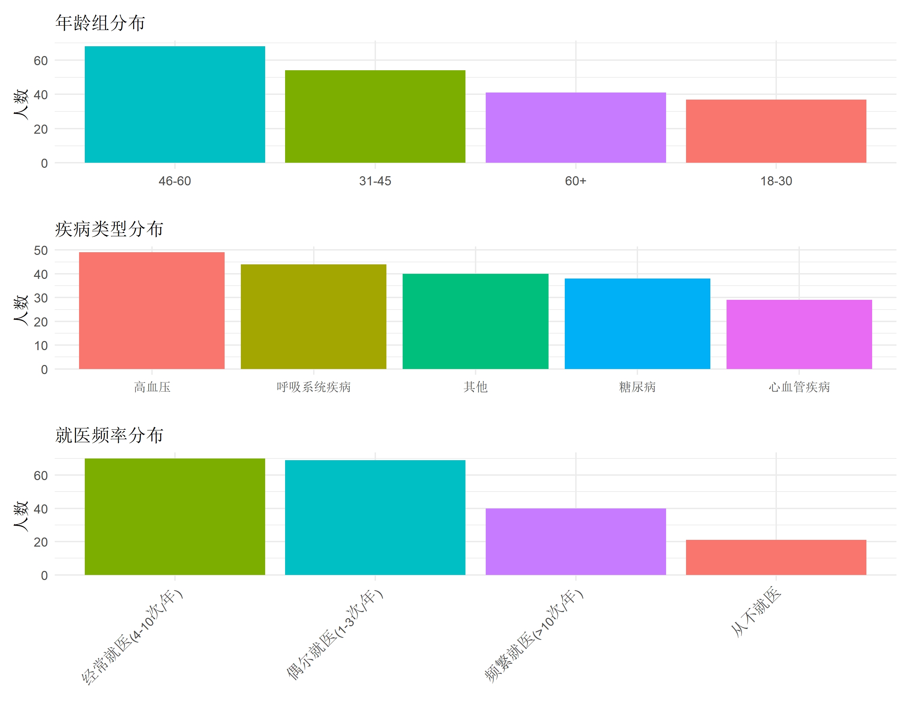
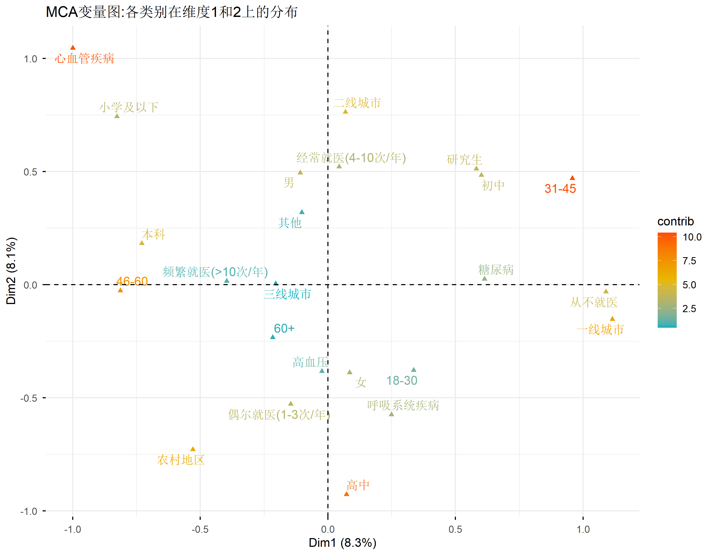
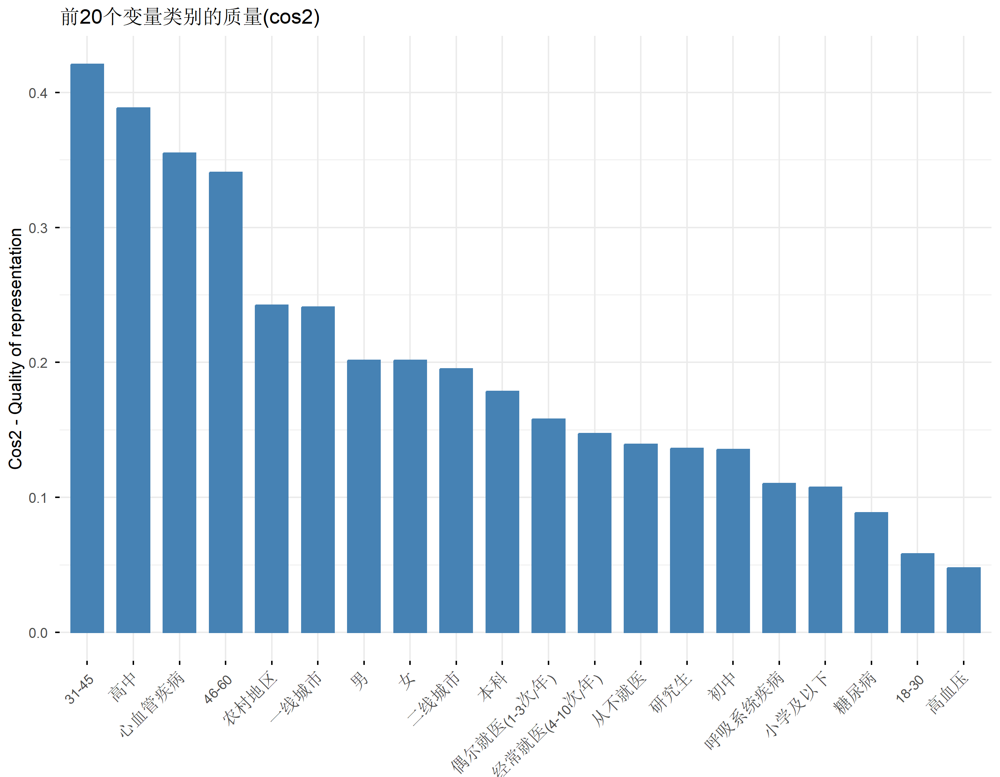
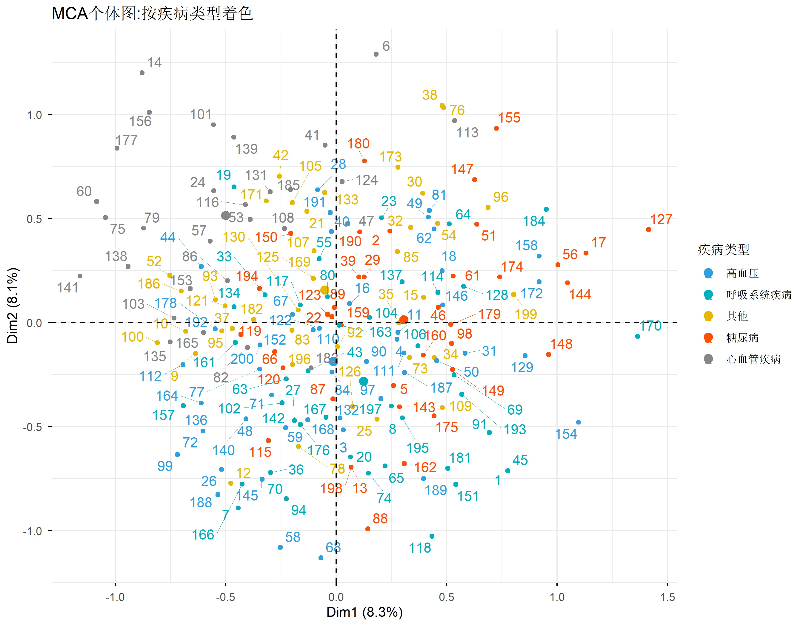
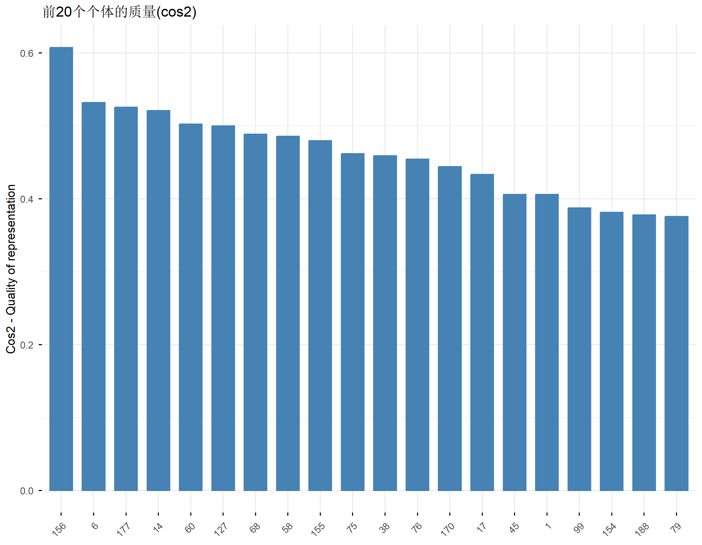
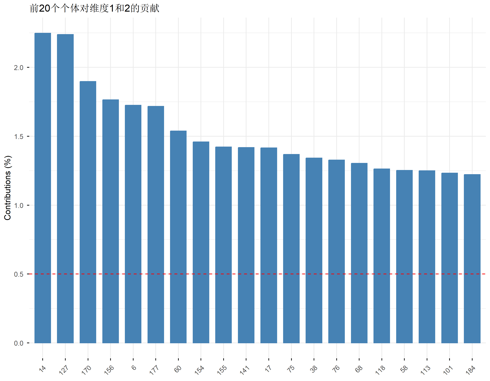
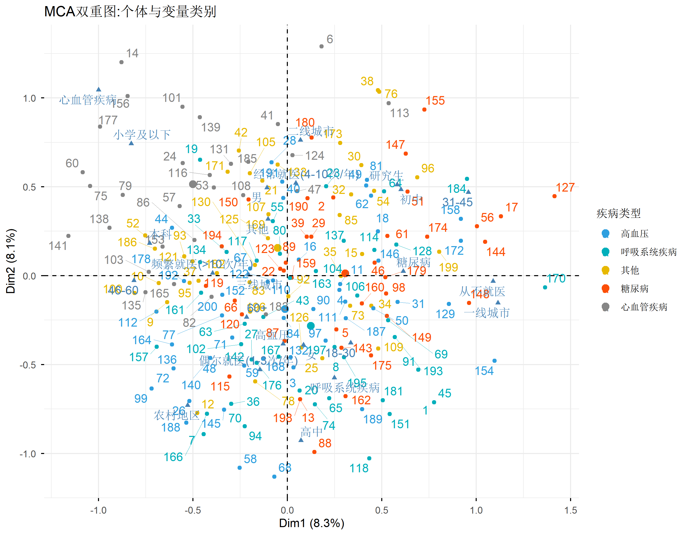
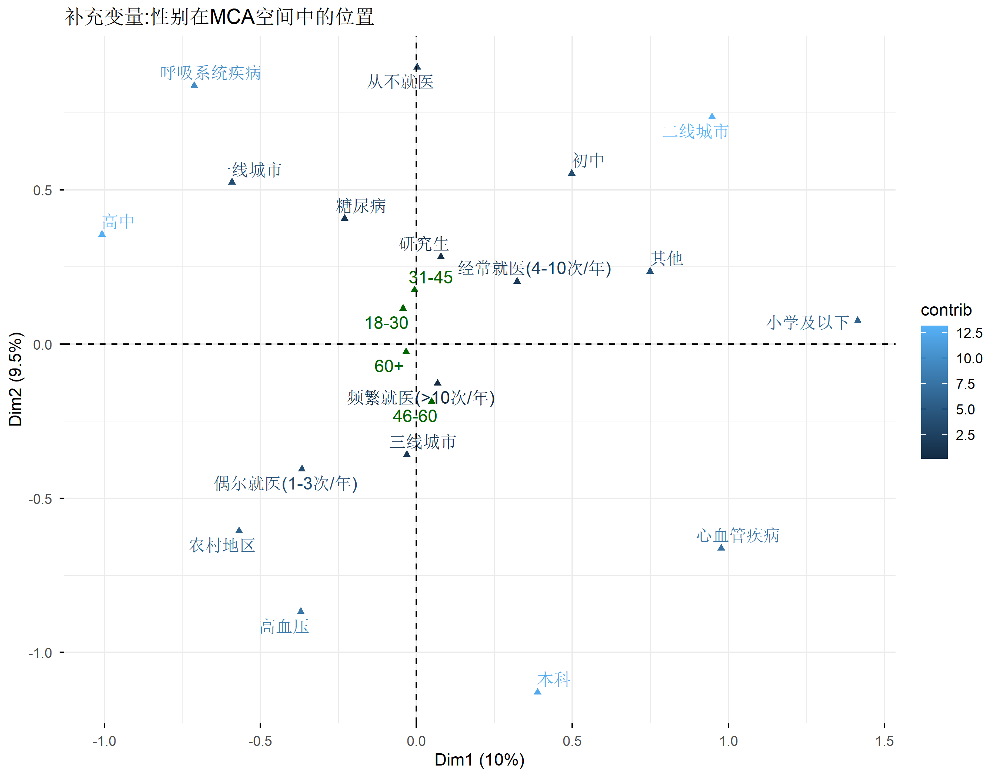
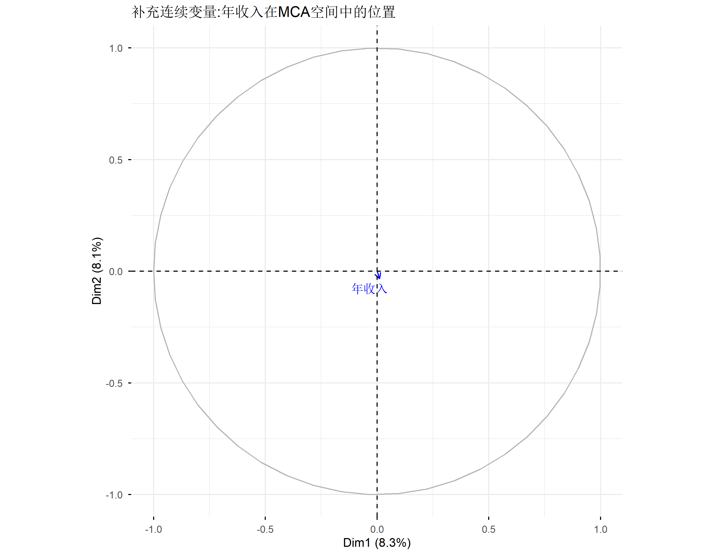

# 安装包(如果未安装)
# install.packages("FactoMineR")
# install.packages("factoextra")
# install.packages("tidyverse")
# 加载包
library(FactoMineR)
library(factoextra)
library(tidyverse)多重对应分析 (MCA): 分类变量的降维与可视化完全指南
统计分析方法
降维分析
R包
数据可视化
使用 FactoMineR 和 factoextra 包进行多重对应分析,探索分类变量的潜在结构,并与PLSPM和SEM进行比较。
方法背景与适用场景
什么是多重对应分析(MCA)
多重对应分析 (Multiple Correspondence Analysis, MCA) 是对应分析(Correspondence Analysis, CA)在多个分类变量情况下的扩展。它是主成分分析(PCA)在分类数据中的等价物,专门用于探索和分析多个分类变量之间的关系。
MCA的核心思想是将高维的分类数据投影到低维空间(通常是二维),使得在这个低维空间中,具有相似模式的数据点靠得更近。这样可以帮助我们: - 发现数据中的潜在结构:识别分类变量之间的关联模式 - 数据降维:将多个分类变量的信息压缩为少数几个维度 - 可视化:通过图形直观地展示变量类别和个体之间的关系
MCA vs PCA: 本质区别
| 特性 | PCA (主成分分析) | MCA (多重对应分析) |
|---|---|---|
| 数据类型 | 连续变量 | 分类变量(名义/有序) |
| 数学基础 | 协方差矩阵/相关矩阵 | 指示矩阵的对应分析 |
| 变量关系 | 线性相关 | 列联表关联 |
| 输出解释 | 主成分是原始变量的线性组合 | 维度是各类别的加权组合 |
MCA 的适用场景
MCA特别适用于以下情况:
- 问卷数据分析:探索多个问卷题目(选择题)之间的关系
- 市场研究:消费者偏好、购买行为分析
- 社会科学研究:人口学特征、态度、行为的关联分析
- 生物医学研究:疾病分类、症状组合模式识别
- 数据探索阶段:在建模前理解分类变量的结构
示例场景: - 医疗研究中:探索患者年龄组、性别、疾病类型、治疗方法、治疗效果等多个分类因素之间的关系 - 消费行为研究:分析消费者年龄段、收入水平、购买频率、品牌偏好之间的模式 - 社会调查:研究教育程度、职业类型、收入等级、政治倾向等变量的关联
不适合使用MCA的情况
- 数据中包含大量连续变量(考虑使用PCA或FAMD)
- 分类变量数量较少(少于3个)(考虑简单的列联表分析)
- 关注因果关系而非探索性分析(考虑使用SEM或PLSPM)
零基础通俗解释
生活化类比:超市购物篮分析
想象你在管理一家超市,想了解顾客的购物习惯。你有成千上万条购物小票数据,每张小票记录了顾客购买的商品类别(如:生鲜、零食、饮料、日用品等)。
问题:如何从这些杂乱的数据中发现规律?
MCA的思路: 1. 创建”购物篮画像”:将每张小票转换为一个高维向量,每个维度代表一种商品类别(买=1,没买=0) 2. 寻找”相似顾客”:在多维空间中,将购物习惯相似的顾客放在一起 3. 降维可视化:将这个高维空间投影到二维平面上,让我们能直观地看到顾客群体的分布
结果解释: - 在图上靠在一起的点(顾客)代表他们有相似的购物模式 - 靠近某个商品类别的顾客,说明他们更倾向于购买该类商品 - 商品类别之间靠得近,说明它们经常被一起购买
核心概念:降维
想象你站在一个充满三维物体的房间里,你想把房间的布局拍下来给朋友看。你只能用二维的照片,所以你需要选择一个拍摄角度,使得最重要的信息都能体现在照片上。
MCA做的是同样的事: - 原始数据:一个高维空间(每个分类变量是一个维度) - MCA:找到一个低维投影(通常是2-3维) - 目标:在这个低维空间中,尽可能保留原始数据的信息
为什么降维有用? - 人类只能直观理解2-3维空间 - 低维空间更容易可视化和解释 - 可以发现隐藏在高维数据中的模式
安装与加载
主要R包
在R中进行MCA分析,我们主要使用两个包: - FactoMineR:提供MCA分析的核心算法 - factoextra:提供美观的可视化功能
包的功能对比
| 包 | 主要功能 | 优势 |
|---|---|---|
| FactoMineR | MCA/CA/PCA/FAMD等多元分析方法 | 功能全面,算法稳定,支持多种变体 |
| factoextra | 基于ggplot2的可视化 | 图表美观,与ggplot2兼容,易于定制 |
| CA | 对应分析 | 专注于对应分析,函数简洁 |
| ade4 | 生态学数据分析 | 提供多种生态学相关的方法 |
示例数据:医疗患者调查
为了演示MCA的应用,我们创建一个模拟的医疗患者调查数据集。这个数据集包含6个分类变量,模拟真实世界中的患者信息。
# 设置随机种子以保证可重复性
set.seed(123)
# 创建模拟数据
n_patients <- 200
# 1. 年龄组(4个类别)
age_group <- sample(c("18-30", "31-45", "46-60", "60+"), n_patients, replace = TRUE, prob = c(0.2, 0.3, 0.3, 0.2))
# 2. 性别
gender <- sample(c("男", "女"), n_patients, replace = TRUE, prob = c(0.48, 0.52))
# 3. 城市等级(经济发展水平)
city_level <- sample(c("一线城市", "二线城市", "三线城市", "农村地区"), n_patients, replace = TRUE, prob = c(0.15, 0.25, 0.35, 0.25))
# 4. 教育程度
education <- sample(c("小学及以下", "初中", "高中", "本科", "研究生"), n_patients, replace = TRUE, prob = c(0.1, 0.2, 0.3, 0.25, 0.15))
# 5. 疾病类型
disease_type <- sample(c("高血压", "糖尿病", "心血管疾病", "呼吸系统疾病", "其他"), n_patients, replace = TRUE, prob = c(0.25, 0.20, 0.15, 0.20, 0.20))
# 6. 就医频率
visit_frequency <- sample(c("从不就医", "偶尔就医(1-3次/年)", "经常就医(4-10次/年)", "频繁就医(>10次/年)"), n_patients, replace = TRUE, prob = c(0.15, 0.35, 0.30, 0.20))
# 创建数据框
patient_data <- data.frame(
患者ID = 1:n_patients,
年龄组 = age_group,
性别 = gender,
城市等级 = city_level,
教育程度 = education,
疾病类型 = disease_type,
就医频率 = visit_frequency
)
# 查看数据结构
str(patient_data)'data.frame': 200 obs. of 7 variables:
$ 患者ID : int 1 2 3 4 5 6 7 8 9 10 ...
$ 年龄组 : chr "31-45" "60+" "46-60" "18-30" ...
$ 性别 : chr "女" "男" "男" "女" ...
$ 城市等级: chr "一线城市" "三线城市" "一线城市" "二线城市" ...
$ 教育程度: chr "高中" "初中" "高中" "本科" ...
$ 疾病类型: chr "呼吸系统疾病" "糖尿病" "高血压" "高血压" ...
$ 就医频率: chr "偶尔就医(1-3次/年)" "经常就医(4-10次/年)" "偶尔就医(1-3次/年)" "从不就医" ...# 查看前几行数据
head(patient_data, 10) 患者ID 年龄组 性别 城市等级 教育程度 疾病类型 就医频率
1 1 31-45 女 一线城市 高中 呼吸系统疾病 偶尔就医(1-3次/年)
2 2 60+ 男 三线城市 初中 糖尿病 经常就医(4-10次/年)
3 3 46-60 男 一线城市 高中 高血压 偶尔就医(1-3次/年)
4 4 18-30 女 二线城市 本科 高血压 从不就医
5 5 18-30 女 二线城市 高中 糖尿病 频繁就医(>10次/年)
6 6 31-45 男 二线城市 研究生 心血管疾病 经常就医(4-10次/年)
7 7 46-60 女 农村地区 高中 呼吸系统疾病 频繁就医(>10次/年)
8 8 18-30 女 三线城市 研究生 呼吸系统疾病 偶尔就医(1-3次/年)
9 9 46-60 女 三线城市 本科 其他 偶尔就医(1-3次/年)
10 10 46-60 女 农村地区 本科 其他 经常就医(4-10次/年)数据概览
让我们先对数据进行初步的描述性分析,了解各变量的分布。
# 各变量的频数统计
summary(patient_data %>% select(-患者ID)) 年龄组 性别 城市等级 教育程度
Length:200 Length:200 Length:200 Length:200
Class :character Class :character Class :character Class :character
Mode :character Mode :character Mode :character Mode :character
疾病类型 就医频率
Length:200 Length:200
Class :character Class :character
Mode :character Mode :character # 可视化各变量的分布
library(ggplot2)
library(patchwork)
p1 <- patient_data %>%
count(年龄组) %>%
ggplot(aes(x = reorder(年龄组, -n), y = n, fill = 年龄组)) +
geom_bar(stat = "identity") +
labs(title = "年龄组分布", x = "", y = "人数") +
theme_minimal() +
theme(legend.position = "none")
p2 <- patient_data %>%
count(疾病类型) %>%
ggplot(aes(x = reorder(疾病类型, -n), y = n, fill = 疾病类型)) +
geom_bar(stat = "identity") +
labs(title = "疾病类型分布", x = "", y = "人数") +
theme_minimal() +
theme(legend.position = "none")
p3 <- patient_data %>%
count(就医频率) %>%
ggplot(aes(x = reorder(就医频率, -n), y = n, fill = 就医频率)) +
geom_bar(stat = "identity") +
labs(title = "就医频率分布", x = "", y = "人数") +
theme_minimal() +
theme(legend.position = "none") +
theme(axis.text.x = element_text(angle = 45, hjust = 1))
p1 / p2 / p3
MCA分析基础
数据准备
在运行MCA之前,需要确保所有变量都是因子(factor)类型。
# 选择用于MCA分析的变量(移除患者ID)
mca_data <- patient_data %>% select(-患者ID)
# 将所有变量转换为因子
mca_data[] <- lapply(mca_data, factor)
# 验证数据结构
str(mca_data)'data.frame': 200 obs. of 6 variables:
$ 年龄组 : Factor w/ 4 levels "18-30","31-45",..: 2 4 3 1 1 2 3 1 3 3 ...
$ 性别 : Factor w/ 2 levels "男","女": 2 1 1 2 2 1 2 2 2 2 ...
$ 城市等级: Factor w/ 4 levels "二线城市","农村地区",..: 4 3 4 1 1 1 2 3 3 2 ...
$ 教育程度: Factor w/ 5 levels "本科","初中",..: 3 2 3 1 3 5 3 5 1 1 ...
$ 疾病类型: Factor w/ 5 levels "高血压","呼吸系统疾病",..: 2 4 1 1 4 5 2 2 3 3 ...
$ 就医频率: Factor w/ 4 levels "从不就医","经常就医(4-10次/年)",..: 3 2 3 1 4 2 4 3 3 2 ...运行MCA
使用FactoMineR::MCA()函数进行MCA分析。该函数有许多参数可以调整,但最基本的使用只需要提供数据集即可。
# 运行MCA分析
# ncp: 保留的主成分数量(默认为5)
# graph: 是否自动生成图形(FALSE,我们将使用factoextra进行更好的可视化)
mca_result <- MCA(mca_data, ncp = 5, graph = FALSE)
# 查看MCA结果摘要
print(mca_result)**Results of the Multiple Correspondence Analysis (MCA)**
The analysis was performed on 200 individuals, described by 6 variables
*The results are available in the following objects:
name description
1 "$eig" "eigenvalues"
2 "$var" "results for the variables"
3 "$var$coord" "coord. of the categories"
4 "$var$cos2" "cos2 for the categories"
5 "$var$contrib" "contributions of the categories"
6 "$var$v.test" "v-test for the categories"
7 "$var$eta2" "coord. of variables"
8 "$ind" "results for the individuals"
9 "$ind$coord" "coord. for the individuals"
10 "$ind$cos2" "cos2 for the individuals"
11 "$ind$contrib" "contributions of the individuals"
12 "$call" "intermediate results"
13 "$call$marge.col" "weights of columns"
14 "$call$marge.li" "weights of rows" MCA结果解释
MCA结果包含多个部分,我们需要理解每个部分的含义:
- 特征值(Eigenvalues):每个维度解释的方差比例
- 变量贡献:各变量及其类别对维度的贡献
- 个体坐标:每个样本在各维度的坐标
特征值与维度解释
提取特征值
# 提取特征值
eig_val <- get_eigenvalue(mca_result)
# 查看特征值
eig_val eigenvalue variance.percent cumulative.variance.percent
Dim.1 0.25024737 8.341579 8.341579
Dim.2 0.24165362 8.055121 16.396700
Dim.3 0.22054907 7.351636 23.748335
Dim.4 0.21696622 7.232207 30.980543
Dim.5 0.21259681 7.086560 38.067103
Dim.6 0.19870818 6.623606 44.690709
Dim.7 0.19224924 6.408308 51.099017
Dim.8 0.17925014 5.975005 57.074022
Dim.9 0.16754572 5.584857 62.658880
Dim.10 0.16543887 5.514629 68.173509
Dim.11 0.15636849 5.212283 73.385792
Dim.12 0.14430848 4.810283 78.196075
Dim.13 0.13796648 4.598883 82.794957
Dim.14 0.12646276 4.215425 87.010382
Dim.15 0.11489631 3.829877 90.840259
Dim.16 0.10312130 3.437377 94.277636
Dim.17 0.08703930 2.901310 97.178946
Dim.18 0.08463163 2.821054 100.000000特征值表格解读
| 列 | 含义 | 解释 |
|---|---|---|
| eigenvalue | 特征值 | 该维度解释的方差大小 |
| percentage of variance | 方差比例 | 该维度解释的方差占总方差的百分比 |
| cumulative percentage of variance | 累积方差比例 | 前k个维度解释的方差累积比例 |
# 可视化特征值(碎石图)
fviz_eig(mca_result,
addlabels = TRUE,
ylim = c(0, 30),
main = "MCA特征值碎石图")
维度选择准则
通常我们选择保留多少个维度,基于以下准则:
Kaiser准则:保留特征值大于平均值的维度
- MCA中,平均特征值 = 1/K,其中K是分类变量的总数
- 但这个准则在MCA中不太常用
肘部法则(Elbow Criterion):在特征值图中找到”肘部”,即下降速度明显变缓的点
累积方差比例:通常保留前2-3个维度,解释50%-70%的方差即可
可解释性:选择能够进行有意义的理论解释的维度
# 计算各维度的累积方差比例
cat("前2个维度累积解释方差:", round(sum(eig_val[, 2][1:2]), 2), "%\n")前2个维度累积解释方差: 16.4 %cat("前3个维度累积解释方差:", round(sum(eig_val[, 2][1:3]), 2), "%\n")前3个维度累积解释方差: 23.75 %变量分析:探索类别之间的关系
变量贡献
变量贡献表示每个变量及其类别对某个维度的贡献程度。贡献度高的类别,在该维度上的代表性更强。
# 提取变量贡献
var_contrib <- get_mca_var(mca_result)$contrib
var_contrib_df <- as.data.frame(var_contrib)
var_contrib_df$变量 <- rownames(var_contrib)
# 查看各变量对前两个维度的贡献
var_contrib_df %>%
arrange(desc(var_contrib_df[, 1])) %>%
head(10) Dim 1 Dim 2 Dim 3 Dim 4 Dim 5 变量
31-45 16.493672 4.104645377 4.6941618 2.63055780 0.5073218 31-45
46-60 14.961453 0.016075025 0.2137021 0.62385813 0.7663852 46-60
一线城市 13.236417 0.258376647 13.7392256 0.45316246 0.1670467 一线城市
心血管疾病 9.657970 10.933625297 3.5544689 0.04763819 1.3107421 心血管疾病
本科 8.508242 0.548633431 0.7312805 3.13805940 16.8183401 本科
从不就医 8.297253 0.007146519 0.9037323 1.61066470 2.7194845 从不就医
糖尿病 4.764364 0.008110405 5.4658211 1.32413658 1.9235998 糖尿病
初中 4.456747 2.992355327 4.2839354 0.80241308 1.3919173 初中
农村地区 4.285615 8.427223789 0.5208439 0.05242149 0.4670394 农村地区
研究生 4.168880 3.343453809 1.7611441 1.97256168 0.8781590 研究生变量坐标
变量坐标表示各变量类别在MCA空间中的位置。
# 提取变量坐标
var_coord <- get_mca_var(mca_result)$coord
var_coord_df <- as.data.frame(var_coord)
var_coord_df$变量 <- rownames(var_coord)
# 查看前几个类别的坐标
head(var_coord_df) Dim 1 Dim 2 Dim 3 Dim 4 Dim 5 变量
18-30 0.33561223 -0.37850649 -1.04391178 -0.08018218 -0.3063908 18-30
31-45 0.95771697 0.46949202 0.47965104 -0.35613424 -0.1548153 31-45
46-60 -0.81284515 -0.02618235 -0.09119964 -0.15455218 0.1695657 46-60
60+ -0.21611949 -0.23335193 0.46158916 0.79774483 0.1991711 60+
男 -0.10852849 0.49479889 0.19216314 -0.37683343 0.3905903 男
女 0.08527239 -0.38877056 -0.15098533 0.29608341 -0.3068924 女变量图可视化
变量图帮助我们理解各类别之间的关系。距离越近的类别,说明它们在原始数据中越经常同时出现。
# 绘制变量图
fviz_mca_var(mca_result,
col.var = "contrib",
gradient.cols = c("#00AFBB", "#E7B800", "#FC4E07"),
repel = TRUE) +
labs(title = "MCA变量图:各类别在维度1和2上的分布")
解读变量图: - 坐标轴含义:坐标轴本身没有实际含义,需要通过类别分布来解释 - 类别距离:靠近的类别代表它们在样本中经常同时出现 - 原点距离:离原点越远的类别,对该维度的贡献越大 - 颜色深浅:颜色越深表示该类别对当前维度的贡献越大
变量质量(变量代表性)
变量质量(cos2)表示该类别在某个维度上的代表性。质量值接近1表示该类别在该维度上有很好的表现。
# 提取变量质量
var_cos2 <- get_mca_var(mca_result)$cos2
var_cos2_df <- as.data.frame(var_cos2)
var_cos2_df$变量 <- rownames(var_cos2)
# 查看前几个类别的质量
head(var_cos2_df) Dim 1 Dim 2 Dim 3 Dim 4 Dim 5 变量
18-30 0.025567583 0.0325207676 0.247366972 0.001459385 0.021309118 18-30
31-45 0.339246420 0.0815262260 0.085092577 0.046910317 0.008864794 31-45
46-60 0.340369484 0.0003531444 0.004284708 0.012305104 0.014811913 46-60
60+ 0.012044107 0.0140413713 0.054941174 0.164102324 0.010229145 60+
男 0.009254483 0.1923632392 0.029013815 0.111574127 0.119869166 男
女 0.009254483 0.1923632392 0.029013815 0.111574127 0.119869166 女# 可视化变量质量
fviz_cos2(mca_result, choice = "var", axes = 1:2, top = 20) +
labs(title = "前20个变量类别的质量(cos2)")
个体分析:理解样本分布
个体坐标
每个个体(样本)在MCA空间中都有一个坐标位置,表示该个体在各维度上的得分。
# 提取个体坐标
ind_coord <- get_mca_ind(mca_result)$coord
ind_coord_df <- as.data.frame(ind_coord)
ind_coord_df$患者ID <- patient_data$患者ID
# 查看前10个患者的坐标
head(ind_coord_df, 10) Dim 1 Dim 2 Dim 3 Dim 4 Dim 5 患者ID
1 0.77697158 -0.71230731 0.25842885 0.0002372511 0.325904865 1
2 0.24305393 0.43930445 0.03208759 -0.0204705641 0.247639292 2
3 0.03187651 -0.51606697 0.57415049 -0.3389228954 0.047392544 3
4 0.27510314 -0.08041472 -0.66676124 0.0378681497 -1.027501624 4
5 0.25942208 -0.30238203 -0.18572749 0.5585313097 0.386839895 5
6 0.18106171 1.29006668 0.12178497 -0.3843314705 0.426956505 6
7 -0.44383870 -0.89150994 -0.08871322 0.0744807568 0.810525941 7
8 0.29981513 -0.45861139 -0.58394106 -0.2777211413 -0.005009843 8
9 -0.63679407 -0.14841934 -0.01983322 0.1561313293 -0.870999737 9
10 -0.68125989 -0.04146424 -0.20084685 0.0627698479 -0.487143196 10个体图可视化
个体图帮助我们理解样本在MCA空间中的分布,可以识别出具有相似模式的样本群体。
# 绘制个体图,按疾病类型着色
fviz_mca_ind(mca_result,
col.ind = patient_data$疾病类型,
palette = c("#2E9FDF", "#00AFBB", "#E7B800", "#FC4E07", "#868686"),
legend.title = "疾病类型",
repel = TRUE) +
labs(title = "MCA个体图:按疾病类型着色")
个体质量(个体代表性)
个体质量(cos2)表示该个体在某个维度上的代表性。
# 提取个体质量
ind_cos2 <- get_mca_ind(mca_result)$cos2
# 可视化个体质量
fviz_cos2(mca_result, choice = "ind", axes = 1:2, top = 20) +
labs(title = "前20个个体的质量(cos2)")
个体贡献
个体贡献表示该个体对某个维度的贡献程度。贡献度高的个体,对定义该维度起到了重要作用。
# 提取个体贡献
ind_contrib <- get_mca_ind(mca_result)$contrib
# 可视化个体贡献
fviz_contrib(mca_result, choice = "ind", axes = 1:2, top = 20) +
labs(title = "前20个个体对维度1和2的贡献")
双重图:同时展示变量和个体
什么是双重图
双重图(Biplot)将变量图和个体图叠加在同一个坐标系中,帮助我们理解个体与变量类别之间的关系。
绘制双重图
# 绘制双重图
fviz_mca_biplot(mca_result,
col.ind = patient_data$疾病类型,
palette = c("#2E9FDF", "#00AFBB", "#E7B800", "#FC4E07", "#868686"),
col.var = "steelblue",
repel = TRUE,
legend.title = "疾病类型") +
labs(title = "MCA双重图:个体与变量类别")
解读双重图: - 个体与类别的距离:个体靠近某个类别,说明该个体具有该类别的特征 - 个体之间的关系:靠近的个体具有相似的模式 - 类别之间的关系:靠近的类别经常同时出现
结果解释:发现潜在结构
维度1解释
通过观察变量图,我们可以尝试解释各维度的含义。
观察维度1(水平轴): - 左侧:老年患者(60+)、经常就医、农村地区、低教育水平 - 右侧:年轻患者(18-30)、偶尔就医、一线城市、高等教育
假设解释:维度1可能反映”医疗资源可及性与社会经济地位” - 右侧:高社会经济地位,医疗资源丰富地区 - 左侧:低社会经济地位,医疗资源相对缺乏地区
维度2解释
观察维度2(垂直轴): - 上部:高血压、心血管疾病、经常就医、60+年龄组 - 下部:呼吸系统疾病、其他疾病类型、年轻患者
假设解释:维度2可能反映”疾病严重程度与年龄相关风险” - 上部:与年龄相关、需要长期管理的慢性疾病 - 下部:其他类型的疾病
验证假设
让我们通过统计验证来支持这些解释。
# 验证维度1与城市等级的关系
dim1_scores <- ind_coord[, 1]
dim2_scores <- ind_coord[, 2]
# 按城市等级分组,计算维度1的平均得分
patient_data %>%
mutate(Dim1 = dim1_scores) %>%
group_by(城市等级) %>%
summarise(
平均维度1得分 = mean(Dim1),
样本数 = n()
) %>%
arrange(desc(平均维度1得分))# A tibble: 4 × 3
城市等级 平均维度1得分 样本数
<chr> <dbl> <int>
1 一线城市 0.558 32
2 二线城市 0.0343 50
3 三线城市 -0.103 72
4 农村地区 -0.265 46# 验证维度1与教育程度的关系
patient_data %>%
mutate(Dim1 = dim1_scores) %>%
group_by(教育程度) %>%
summarise(
平均维度1得分 = mean(Dim1),
样本数 = n()
) %>%
arrange(平均维度1得分)# A tibble: 5 × 3
教育程度 平均维度1得分 样本数
<chr> <dbl> <int>
1 小学及以下 -0.414 16
2 本科 -0.365 48
3 高中 0.0361 62
4 研究生 0.291 37
5 初中 0.301 37# 验证维度2与疾病类型的关系
patient_data %>%
mutate(Dim2 = dim2_scores) %>%
group_by(疾病类型) %>%
summarise(
平均维度2得分 = mean(Dim2),
样本数 = n()
) %>%
arrange(平均维度2得分)# A tibble: 5 × 3
疾病类型 平均维度2得分 样本数
<chr> <dbl> <int>
1 呼吸系统疾病 -0.282 44
2 高血压 -0.188 49
3 糖尿病 0.0122 38
4 其他 0.157 40
5 心血管疾病 0.514 29补充MCA:添加连续变量
什么是补充变量
补充变量(Supplementary Variables)是MCA中的一种特殊变量: - 主动变量(Active Variables):参与MCA的降维计算(用于定义空间) - 补充变量(Supplementary Variables):不参与计算,但在分析后投影到MCA空间中
补充变量可以是: - 分类变量:与主动变量类似,但不参与构建维度 - 连续变量:投影到MCA空间中,作为补充信息
添加补充分类变量
让我们添加”性别”作为补充变量。
# 运行MCA,将性别设为补充变量
# 使用quali.sup参数指定分类补充变量
gender_col_index <- which(names(mca_data) == "性别") - 1 # 注意:索引从1开始,已移除患者ID
mca_sup <- MCA(mca_data %>% select(-性别),
quali.sup = gender_col_index,
ncp = 5,
graph = FALSE)
# 查看补充变量的坐标
fviz_mca_var(mca_sup,
choice = "var.cat",
col.var = "contrib",
repel = TRUE) +
labs(title = "补充变量:性别在MCA空间中的位置")
添加补充连续变量
让我们添加一个连续变量:假设我们有”年收入(万元)“数据。
# 创建模拟的连续变量
patient_data$年收入 <- rnorm(n_patients, mean = 15, sd = 8)
patient_data$年收入 <- pmax(patient_data$年收入, 3) # 确保最小值为3万元
# 将连续变量添加到mca_data中
mca_with_quanti <- mca_data
mca_with_quanti$年收入 <- patient_data$年收入
# 运行MCA,添加连续补充变量
income_col_index <- which(names(mca_with_quanti) == "年收入")
mca_quant <- MCA(mca_with_quanti,
quanti.sup = income_col_index,
ncp = 5,
graph = FALSE)
# 可视化补充连续变量
fviz_mca_var(mca_quant,
choice = "quanti.sup",
repel = TRUE) +
labs(title = "补充连续变量:年收入在MCA空间中的位置")
MCA与其他方法的比较
MCA vs PLSPM vs SEM: 方法学对比
这是本文的核心内容。我们将详细比较这三种方法的特点、适用场景和局限性。
| 特性 | MCA (多重对应分析) | PLSPM (偏最小二乘路径模型) | SEM (结构方程模型) |
|---|---|---|---|
| 数据类型 | 仅分类变量 | 连续/有序变量(问卷量表为主) | 连续/有序/分类(需特殊处理) |
| 核心目标 | 探索性:发现数据结构 | 预测导向:解释方差 | 验证性:验证理论模型 |
| 模型类型 | 降维/可视化 | 路径分析(测量+结构模型) | 路径分析(测量+结构模型) |
| 样本量要求 | 较灵活,建议n > 各变量总类别数 × 3 | 小样本友好(n ≥ 30) | 大样本要求(n ≥ 200) |
| 分布假设 | 无需正态假设 | 无需正态假设 | 通常假设多元正态 |
| 测量模型 | 不区分测量模型 | 支持反映性/形成性指标 | 主要支持反映性指标 |
| 结构模型 | 不适用(无路径) | 支持复杂路径关系 | 支持复杂路径关系 |
| 模型拟合 | 特征值解释方差 | R²、Q²预测指标 | χ²、CFI、TLI、RMSEA等 |
| 统计检验 | 无传统统计检验 | Bootstrap显著性检验 | 参数估计的显著性检验 |
| 可视化 | 变量图、个体图、双重图 | 路径图 | 路径图 |
| 软件实现 | FactoMineR, ca, ade4 | seminr, plspm | lavaan, OpenMx |
| 典型应用 | 数据探索、市场研究、社会学 | 管理学、营销学、心理学 | 心理学、教育学、社会科学 |
| 理论要求 | 低,适合理论探索 | 中等,需要路径假设 | 高,需要成熟理论框架 |
深度对比分析
1. 数据适用性
MCA的适用场景: - 问卷中有大量多选题/选择题 - 数据全是分类变量(名义或有序) - 想要探索变量之间的关联模式 - 研究处于理论探索阶段
PLSPM的适用场景: - 研究中有明确的路径假设 - 样本量较小,难以满足SEM要求 - 关注预测能力而非模型拟合 - 有形成性指标需要处理
SEM的适用场景: - 有成熟的理论框架需要验证 - 样本量充足(通常n ≥ 200) - 主要关注理论验证而非预测 - 要求严格的模型拟合检验
2. 分析目的差异
| 目的 | MCA | PLSPM | SEM |
|---|---|---|---|
| 探索数据结构 | ✅ 核心优势 | ⚠️ 有限支持 | ❌ 不适用 |
| 验证理论模型 | ❌ 不适用 | ⚠️ 部分支持 | ✅ 核心优势 |
| 预测未来表现 | ❌ 不适用 | ✅ 核心优势 | ⚠️ 有限支持 |
| 变量降维 | ✅ 核心优势 | ❌ 不适用 | ❌ 不适用 |
| 可视化展示 | ✅ 核心优势 | ✅ 支持 | ✅ 支持 |
| 中介效应分析 | ❌ 不适用 | ✅ 支持 | ✅ 支持 |
| 调节效应分析 | ❌ 不适用 | ✅ 支持 | ✅ 支持 |
3. 方法论原理对比
MCA的原理: - 基于对应分析(CA) - 将分类变量转换为指示矩阵(Indicators) - 通过奇异值分解(SVD)提取主要维度 - 最小化卡方距离,最大化类别间差异
PLSPM的原理: - 基于方差的结构方程建模 - 迭代估计潜变量得分 - 通过最小化残差平方和拟合模型 - 关注解释方差(R²)和预测能力(Q²)
SEM的原理: - 基于协方差的结构方程建模 - 通过最大似然估计拟合模型 - 最小化样本协方差与模型协方差之间的差异 - 关注模型拟合指数和参数估计
4. 结果解读差异
MCA结果解读: - 特征值:维度解释的方差比例 - 坐标:类别/个体在各维度的位置 - 贡献:类别对维度的贡献程度 - 质量:类别在维度上的代表性 - 主要通过距离和聚类进行定性解释
PLSPM结果解读: - 路径系数:变量间的预测关系 - R²:模型的解释力 - Cronbach’s α/CR:信度 - AVE:收敛效度 - HTMT:区分效度 - 主要通过系数大小和显著性进行定量解释
SEM结果解读: - 标准化路径系数:变量间的标准化关系 - 拟合指数:CFI/TLI/RMSEA/SRMR等 - 修正指数:模型改进建议 - 通过拟合指数和参数显著性进行定量解释
5. 局限性对比
MCA的局限性: - ❌ 不能处理连续变量(除非先分类化) - ❌ 没有统计检验,依赖主观解释 - ❌ 无法进行因果推断 - ❌ 无法处理缺失值(需预处理) - ❌ 样本量过小结果不稳定
PLSPM的局限性: - ❌ 拟合指数较少,模型诊断不全面 - ❌ 小样本可能导致不稳定估计 - ❌ 形成性指标的效度检验复杂 - ❌ 理论基础相对薄弱,学术接受度低于SEM - ❌ 无法处理复杂的多层结构
SEM的局限性: - ❌ 需要大样本,小样本难以收敛 - ❌ 对数据分布假设敏感 - ❌ 模型设定错误可能导致错误结论 - ❌ 计算复杂,容易不收敛 - ❌ 对形成性指标处理困难
方法选择决策树
开始
↓
是否有成熟的理论框架?
├─ 是 → 样本量 ≥ 200?
│ ├─ 是 → 使用 SEM ✅
│ └─ 否 → 考虑简化模型或使用PLSPM
│
└─ 否 → 数据类型?
├─ 全是分类变量?
│ ├─ 是 → 使用 MCA ✅
│ └─ 否 → 关注点?
│ ├─ 探索性分析?
│ │ └─ 使用 MCA 或其他降维方法
│ └─ 预测导向?
│ └─ 使用 PLSPM
└─ 有路径假设?
├─ 是 → 样本量?
│ ├─ ≥ 30 → 使用 PLSPM
│ └─ ≥ 200 → 考虑SEM
└─ 否 → 数据类型?
├─ 分类变量 → 使用 MCA
└─ 连续变量 → 使用其他方法(如回归分析)实际应用案例对比
案例1:消费者满意度研究
研究问题:探索消费者满意度的影响因素和结构
数据情况: - 问卷量表数据(Likert 5点量表) - 样本量n = 150 - 理论框架不成熟,处于探索阶段
方法选择:PLSPM - 理由: - 样本量不足以满足SEM要求 - 关注预测能力(满意度预测忠诚度) - 理论不成熟,需要探索
案例2:疾病症状模式识别
研究问题:识别患者症状的组合模式
数据情况: - 症状均为分类变量(有/无) - 样本量n = 500 - 无明确理论假设
方法选择:MCA - 理由: - 全是分类变量 - 探索性研究,发现模式 - 需要可视化展示症状组合
案例3:理论验证研究
研究问题:验证某个成熟的社会心理学理论
数据情况: - 问卷量表数据 - 样本量n = 350 - 有明确的理论模型和路径假设
方法选择:SEM - 理由: - 样本量充足 - 有成熟理论需要验证 - 需要严格的模型拟合检验
高级应用
补充MCA(Supplementary MCA)
当某些变量不适合参与MCA计算,但我们仍然想在结果中展示它们时,可以使用补充变量。
# 示例:添加补充连续变量
# 注意:需要在mca_data中先添加年收入变量
# mca_data$年收入 <- patient_data$年收入
# income_col_index <- which(names(mca_data) == "年收入")
# gender_col_index <- which(names(mca_data) == "性别") - 1
#
# mca_complete <- MCA(mca_data,
# quanti.sup = income_col_index,
# quali.sup = gender_col_index,
# ncp = 5,
# graph = FALSE)
#
# # 可视化结果
# fviz_mca_biplot(mca_complete,
# col.ind = patient_data$疾病类型,
# palette = "jco",
# repel = TRUE) +
# labs(title = "完整的MCA分析:包含补充变量")多组MCA(Multiple Group MCA)
当有分组变量(如性别、地区),想要比较不同组的MCA结果时,可以使用多组MCA。
# 简化的多组MCA示例(通过子集分析)
# 需要选择用于MCA的变量(排除患者ID和其他连续变量)
mca_vars <- c("年龄组", "城市等级", "教育程度", "疾病类型", "就医频率")
mca_male <- MCA(patient_data %>%
filter(性别 == "男") %>%
select(all_of(mca_vars)),
graph = FALSE)
mca_female <- MCA(patient_data %>%
filter(性别 == "女") %>%
select(all_of(mca_vars)),
graph = FALSE)
# 比较两组的特征值
cat("男性患者MCA特征值:\n")男性患者MCA特征值:print(get_eigenvalue(mca_male)[1:3, ]) eigenvalue variance.percent cumulative.variance.percent
Dim.1 0.3475054 10.220749 10.22075
Dim.2 0.3104795 9.131751 19.35250
Dim.3 0.3039940 8.941000 28.29350cat("\n女性患者MCA特征值:\n")
女性患者MCA特征值:print(get_eigenvalue(mca_female)[1:3, ]) eigenvalue variance.percent cumulative.variance.percent
Dim.1 0.3311903 9.740892 9.740892
Dim.2 0.3105267 9.133140 18.874032
Dim.3 0.2956860 8.696646 27.570678混合数据分析(FAMD)
当数据中同时包含分类变量和连续变量时,可以使用因子混合数据分析(FAMD)。
# 创建混合数据
mixed_data <- patient_data %>%
select(-患者ID, -性别, -城市等级, -教育程度, -疾病类型, -就医频率) %>% # 保留连续变量
mutate(
年龄组_num = case_when(
年龄组 == "18-30" ~ 1,
年龄组 == "31-45" ~ 2,
年龄组 == "46-60" ~ 3,
年龄组 == "60+" ~ 4
)
) %>%
select(年收入, 年龄组_num)
# 实际使用时,可以混合分类和连续变量
# 这里仅作演示,FAMD需要同时有分类和连续变量
# library(FactoMineR)
# famd_result <- FAMD(mixed_data, ncp = 5, graph = FALSE)最佳实践与注意事项
数据准备
- 变量数量:建议至少有3个以上的分类变量
- 类别数量:每个变量最好有3-5个类别,避免过多类别导致维度爆炸
- 类别合并:某些类别样本量过少时,考虑合并相似类别
- 缺失值处理:MCA无法处理缺失值,需要先进行缺失值插补或删除
结果解读
- 避免过度解读:MCA是探索性方法,结果需要结合领域知识解读
- 关注贡献度:主要关注贡献度高的类别和个体
- 验证假设:通过统计验证支持主观解释
- 交叉验证:使用不同的数据子集验证结果的稳定性
可视化技巧
- 颜色使用:使用有意义的颜色编码,帮助解读
- 标签调整:使用
repel = TRUE避免标签重叠 - 标题清晰:给每个图形添加清晰的标题和解释
- 导出高质量:使用高分辨率导出图形,用于论文发表
常见错误
| 错误类型 | 错误描述 | 后果 | 解决方案 |
|---|---|---|---|
| 数据类型错误 | 将连续变量当作分类变量使用 | 信息损失,结果失真 | 使用合适的变量类型 |
| 过度解读 | 对小差异进行过度理论化 | 错误结论 | 结合统计验证 |
| 忽略缺失值 | 不处理缺失值直接分析 | 错误或缺失结果 | 先处理缺失值 |
| 样本量不足 | 样本量太小进行MCA | 结果不稳定 | 确保足够的样本量 |
| 维度选择不当 | 保留过多或过少维度 | 信息损失或噪声过多 | 使用累积方差和可解释性选择 |
报告模板
学术论文报告格式
# MCA分析报告模板
## 方法部分
"本研究采用多重对应分析(Multiple Correspondence Analysis, MCA)探索[研究主题]的潜在结构。MCA是对应分析在多个分类变量情况下的扩展,专门用于分析分类变量之间的关系。分析使用R语言的FactoMineR包进行,前两个维度解释了[X]%的总方差。"
## 结果部分
"MCA分析揭示了两条主要的维度结构:
- 维度1解释了[X]%的方差,主要反映了[维度1的解释,如:社会经济地位]
- 维度2解释了[Y]%的方差,主要反映了[维度2的解释,如:疾病严重程度]
从变量图中可以看出,[具体发现]。个体图显示[具体发现],表明[结论]。
## 讨论
"MCA结果支持了[理论假设],与[其他研究]一致。与其他方法相比,MCA的优势在于[优势]。然而,MCA也有其局限性,如[局限性]。
未来研究可以结合[其他方法,如SEM或PLSPM]进行更深入的验证。"常见问题FAQ
Q1: MCA和PCA有什么区别?
A: 主要区别在于数据类型: - PCA:适用于连续变量,基于协方差/相关矩阵 - MCA:适用于分类变量,基于指示矩阵的对应分析
如果数据中有连续变量,可以考虑: - 先对连续变量进行分类化,然后使用MCA - 使用因子混合分析(FAMD)
Q2: MCA需要多大的样本量?
A: MCA对样本量的要求相对灵活,但经验法则是: - 最小要求:n > 各变量类别总数 × 2 - 推荐要求:n > 各变量类别总数 × 3-5 - 稳定估计:n > 200-300
例如,如果有5个变量,每个变量平均有4个类别(共20个类别),则至少需要40个样本,推荐60-100个样本。
Q3: 如何选择保留的维度数量?
A: 主要依据以下准则: 1. 累积方差比例:前2-3个维度解释50%-70%的方差 2. 肘部法则:在特征值图中找到肘部 3. 可解释性:选择能够进行有意义的理论解释的维度
通常情况下,前2个维度已经能够解释足够多的信息,且便于可视化。
Q4: MCA能否处理有序分类变量?
A: 可以,但需要注意: - 标准MCA将所有变量视为名义变量,不利用有序信息 - 如果有序信息很重要,可以考虑: - 使用特定于有序数据的MCA变体 - 使用其他方法(如PCA,对有序变量赋予数值)
Q5: MCA和PLSPM/SEM可以一起使用吗?
A: 可以,而且这是一个很好的研究策略: - 阶段1:使用MCA进行探索性分析,发现数据结构和潜在维度 - 阶段2:基于MCA结果构建理论模型,提出路径假设 - 阶段3:使用PLSPM或SEM进行验证性分析,检验理论模型
这种方法被称为”探索-验证”策略,在社会科学研究中非常常见。
Q6: 如何解读MCA的坐标轴含义?
A: 坐标轴本身没有预设含义,需要通过观察各类别的分布来解释: 1. 观察坐标轴两端的类别 2. 识别共同特征 3. 结合领域知识提出解释 4. 通过统计验证支持解释
例如,如果维度1的一端是”高收入”、“高教育”、“一线城市”,另一端是”低收入”、“低教育”、“农村地区”,则可以解释维度1反映”社会经济地位”。
Q7: MCA的结果可以用于后续分析吗?
A: 可以,MCA的结果(维度得分)可以作为新的变量用于后续分析: - 作为回归分析的预测变量 - 作为聚类的输入变量 - 作为机器学习模型的特征
但需要注意: - 维度得分是降维后的结果,会损失部分信息 - 需要选择合适的维度数量 - 要验证维度得分的稳定性
参考文献
- Greenacre, M., & Blasius, J. (Eds.). (2006). Multiple Correspondence Analysis and Related Methods. Chapman & Hall/CRC.
- Abdi, H., & Williams, L. J. (2010). Multiple correspondence analysis. Encyclopedia of Research Design, 2, 651-657.
- Le Roux, B., & Rouanet, H. (2010). Multiple Correspondence Analysis. Sage Publications.
- Husson, F., Lê, S., & Pagès, J. (2017). Exploratory Multivariate Analysis by Example Using R (2nd ed.). CRC Press.
- Hair, J. F., Hult, G. T. M., Ringle, C. M., & Sarstedt, M. (2022). A Primer on Partial Least Squares Structural Equation Modeling (PLS-SEM) (3rd ed.). Sage.
- Kline, R. B. (2015). Principles and Practice of Structural Equation Modeling (4th ed.). Guilford Press.
- Rosseel, Y. (2012). lavaan: An R Package for Structural Equation Modeling. Journal of Statistical Software, 48(2), 1-36.
附录:完整代码
# MCA完整分析流程
# 1. 安装和加载包
# install.packages(c("FactoMineR", "factoextra", "tidyverse", "ggplot2", "patchwork"))
library(FactoMineR)
library(factoextra)
library(tidyverse)
library(ggplot2)
library(patchwork)
# 2. 准备数据
# 确保所有变量都是因子
mca_data <- your_data
mca_data[] <- lapply(mca_data, factor)
# 3. 运行MCA
mca_result <- MCA(mca_data, ncp = 5, graph = FALSE)
# 4. 查看特征值
eig_val <- get_eigenvalue(mca_result)
fviz_eig(mca_result, addlabels = TRUE)
# 5. 可视化变量
fviz_mca_var(mca_result, col.var = "contrib", repel = TRUE)
# 6. 可视化个体
fviz_mca_ind(mca_result, col.ind = your_data$group_var, repel = TRUE)
# 7. 双重图
fviz_mca_biplot(mca_result, col.ind = your_data$group_var, col.var = "steelblue", repel = TRUE)
# 8. 提取结果
var_coord <- get_mca_var(mca_result)$coord
var_contrib <- get_mca_var(mca_result)$contrib
var_cos2 <- get_mca_var(mca_result)$cos2
ind_coord <- get_mca_ind(mca_result)$coord
ind_contrib <- get_mca_ind(mca_result)$contrib
ind_cos2 <- get_mca_ind(mca_result)$cos2
# 9. 导出结果用于后续分析
# 例如,将维度得分作为新变量
mca_scores <- as.data.frame(ind_coord)
final_data <- cbind(your_data, mca_scores[, 1:2]) # 保留前两个维度